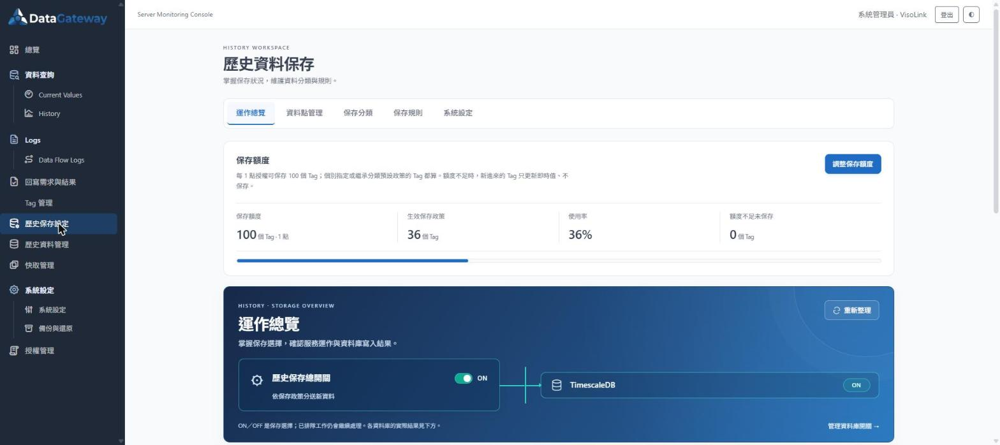
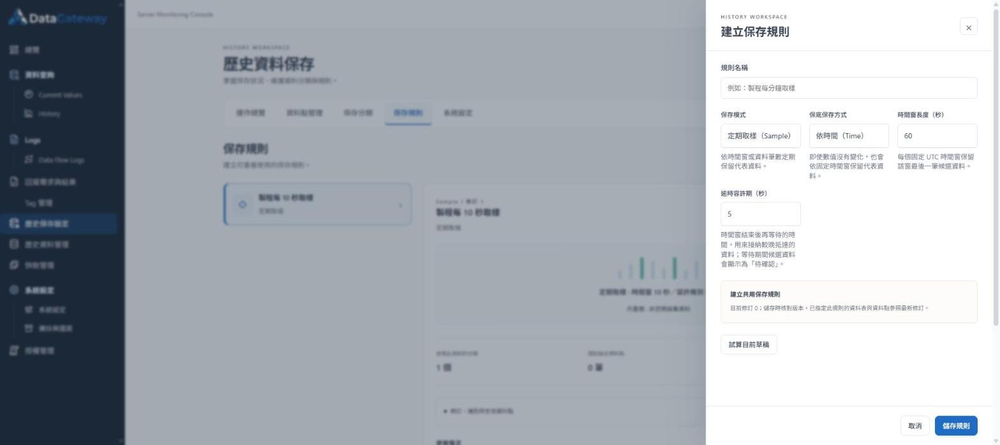
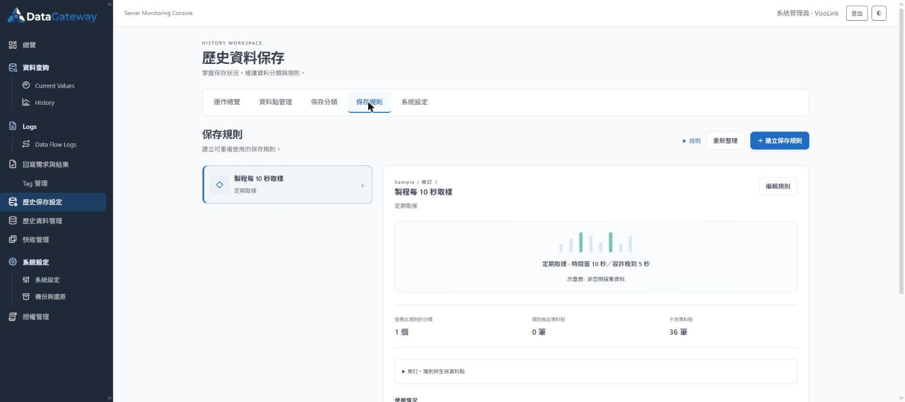
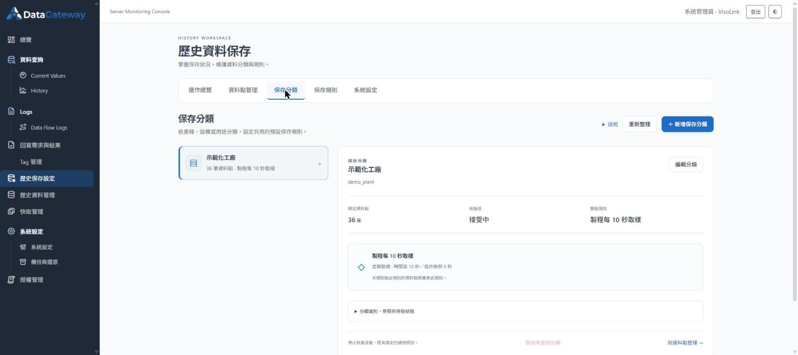

歷史保存設定
決定哪些 Tag 要保存、怎麼保存、存到哪個資料庫。沒有設定保存政策的 Tag 只更新即時值，不會保存。
第一次設定建議順序：調整保存額度 → 建立保存規則 → 建立保存分類 → 在資料點管理指派分類 → 確認保存目的端寫入開關 → 確認歷史保存總開關為 ON。保存政策只有完整保存、變更時保存、趨勢壓縮、定期取樣四種。
查看運作總覽

- 開啟「歷史保存設定」，預設在「運作總覽」分頁。
- 看「保存額度」：保存額度、生效保存政策、使用率、額度不足未保存。
- 看「歷史保存總開關」與各資料庫（例如 TimescaleDB）是否為 ON。
- 看「資料庫空間與保存區間」與「保存與寫入狀況」：等待寫入、最久等待、最近成功寫入。
能確認保存功能在運作、資料庫有在寫入，以及額度是否足夠。
失敗時先查
- 「額度不足未保存」大於 0：依 8.2 增加保存額度。
- 等待寫入持續增加：看「各資料庫的實際寫入結果」的問題說明，或按「詳細診斷 →」。
調整保存額度
- 按「調整保存額度」。
- 輸入要使用的授權點數（每 1 點可保存 100 個 Tag）。
- 按「確認調整」。
「保存額度」顯示新的 Tag 數量，授權管理「點數使用狀況」出現對應的保存額度權杖。
個別指定或繼承分類預設政策的 Tag 都算在額度內。額度不足時，新進來的 Tag 只更新即時值、不保存。
失敗時先查
- 點數不足：到「授權管理」確認可用點數（第 13 章）。
建立保存規則


- 規則名稱
- 例如「製程每分鐘取樣」。
- 保存模式
- 例如定期取樣（Sample）：依時間窗或資料筆數定期保留代表資料。
- 保底保存方式
- 例如依時間（Time）：即使數值沒有變化，也依固定時間窗保留代表資料。
- 時間窗長度（秒）
- 每個固定時間窗保留最後一筆候選資料。
- 逾時容許期（秒）
- 時間窗結束後再等待較晚抵達的資料。
- 按「＋ 建立保存規則」。
- 填寫各欄位。
- 按「試算目前草稿」確認判定結果。
- 按「儲存規則」。
顯示「已儲存，並從正式服務回讀確認」，清單出現新規則。
規則被分類或資料點使用中時不能刪除；未使用的規則可在詳情按「刪除未使用規則」。
失敗時先查
- 儲存失敗：檢查時間窗與容許期是否為正整數。
建立保存分類

- 按「＋ 新增保存分類」。
- 填名稱、代碼，選預設保存規則。
- 按「建立分類」。
- 之後可在分類詳情按「編輯分類」，或按「到資料點管理 →」指派資料點。
分類清單出現新分類，顯示綁定資料點數與預設規則。
停止新指派後，既有綁定仍維持保存。沒有資料點的分類可按「刪除未使用分類」。
失敗時先查
- 代碼重複會被拒絕。
指派資料點的保存分類或規則

- 用「搜尋資料點」、來源 Agent、保存分類篩選；需要時展開「更多篩選」。
- 勾選資料點，或按「將本頁 10 筆加入選取」「選取所有符合條件的 N 筆」。
- 按「指派保存分類」（或「指定保存規則」個別覆寫）。
- 抽屜顯示額度影響與逐筆預覽，標示將略過的資料點與原因；確認後按「確認指派」。
- 看逐筆結果：成功、略過或衝突原因。
資料點的「保存分類」「生效保存規則」更新，「歷史參與」顯示已設定分類。
「取消指派」會讓資料點不再保存，但已保存的歷史仍查得到。
失敗時先查
- 結果顯示略過：通常是額度不足或資料點已有衝突設定，依原因處理後重新指派。
保存目的端與資料保護

- 在「保存目的端」確認 TimescaleDB 的「寫入開關」為 ON；要關閉或開啟時切換開關並確認。
- 需要另存到 InfluxDB 時，按「＋ 新增 InfluxDB 目的端」或「設定 InfluxDB」建立連線。
- 在各目的端的「連線與批次設定」調整寫入間隔、每批上限、逾時／重試，以及「寫入失敗時」保留等待（含磁碟上限）或遺棄。
- 切到「資料保護」查看各資料庫寫入失敗時的處理方式與目前磁碟暫存。
目的端狀態顯示待命或寫入中，「最近成功寫入」持續更新。
某個資料庫寫不進去時，「保留等待」會把資料暫存到寫入服務的磁碟，恢復後依序補寫；不影響其他資料庫。
失敗時先查
- 寫入錯誤不是「無」：檢查資料庫連線，或按「檢查結構」。
歷史保存總開關
- 在「運作總覽」找到「歷史保存總開關」。
- 切換開關，在確認視窗按「確認操作」。
總開關顯示 ON（依保存政策分送新資料）或 OFF。
ON／OFF 是保存選擇；已排隊的工作仍會繼續處理。各資料庫的實際結果看下方寫入狀況。
失敗時先查
- 開了總開關仍沒有寫入：確認資料點已指派保存政策（8.5），且目的端寫入開關為 ON（8.6）。